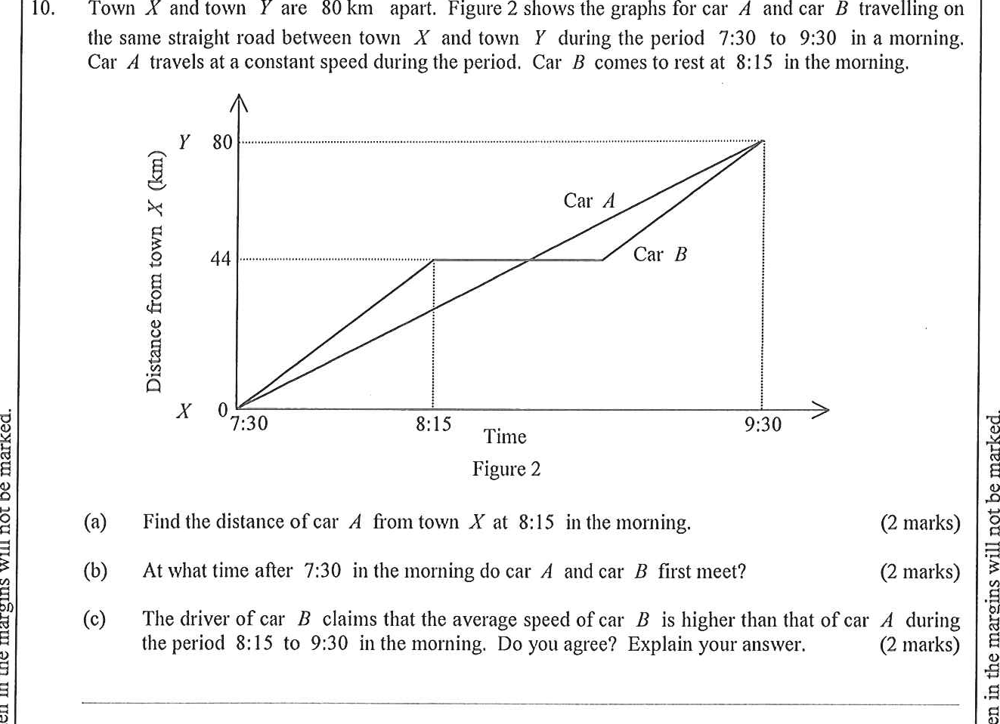

Town $X$ and town $Y$ are $80$ km apart. Figure 2 shows the graphs for car $A$ and car $B$ travelling on the same straight road between town $X$ and town $Y$ during the period 7:30 to 9:30 in a morning. Car $A$ travels at a constant speed during the period. Car $B$ comes to rest at 8:15 in the morning.
Find the distance of car $A$ from town $X$ at 8:15 in the morning. [2 marks]
At what time after 7:30 in the morning do car $A$ and car $B$ first meet? [2 marks]
The driver of car $B$ claims that the average speed of car $B$ is higher than that of car $A$ during the period 8:15 to 9:30 in the morning. Do you agree? Explain your answer. [2 marks]

Figure (original exam diagram)
Step-by-step Solution
1Part (a) — Car A is uniform, so use proportion.
Direct Proportion at Constant Speed\(\text{distance}\propto t\quad\Longrightarrow\quad\dfrac{d_{1}}{d_{2}}=\dfrac{t_{1}}{t_{2}}\)Car \(A\) is uniform, so its distance from \(X\) is proportional to the 45 minutes elapsed.
Car $A$ covers $80$ km in $120$ min (7:30 → 9:30).
At 8:15, the elapsed time is $45$ min, so
$$\text{distance}=\frac{45}{120}\times 80 = 30 \text{ km.}$$
Hint: constant speed $\Rightarrow$ distance is directly proportional to time ($\text{distance} \propto t$).
2Part (b) — Model Car B's motion.
From the graph, car $B$ reaches $44$ km at 8:15 (after $45$ min), then rests until 9:30.
Speed of $B$ (first stage) $=\dfrac{44}{45}$ km/min; speed of $A = \dfrac{80}{120}=\dfrac{2}{3}$ km/min.
Hint: read the stationary section of car B's graph (8:15 → 9:30).
3Part (b) — Solve for the first meeting.
Let the first meeting be $t$ minutes after 7:30. For $0\le t\le 45$ both cars move:
$$\frac{44}{45}\,t=\frac{80}{120}\,t \quad\Rightarrow\quad \frac{t}{120}=\frac{44}{80}$$
$$t=\frac{44}{80}\times 120 = 66 \text{ min.}$$
Hint: set the two distances equal, then solve the proportion.
4Part (b) — Convert 66 minutes to clock time.
$7{:}30 + 1$ h $6$ min $= 8{:}36$ a.m.
Hint: check that $66$ min lies inside the interval where both cars move ($0\le t\le 45$? No — extend to 8:36, still before 9:30).
5Part (c) — Compare average speeds (8:15 → 9:30).
Average Speed\(\text{average speed}=\dfrac{\text{distance travelled}}{\text{time taken}}\)Over the same 75-minute period, compare the distances \(50\text{ km}\) and \(36\text{ km}\).
Car $B$ travels $80-44=36$ km in the $75$-min period.
Car $A$ travels $80-30=50$ km $>36$ km in the same period.
Hint: average speed $=\dfrac{\text{distance travelled}}{\text{time taken}}$; same time $\Rightarrow$ compare distances only.
6Part (c) — Conclusion.
Since car $A$ covers more distance in the same time,
$$\text{avg. speed of } A > \text{avg. speed of } B.$$
The driver's claim is disagreed.
Hint: state clearly whether you agree, then justify with numbers.
Answer:
(a) $30$ km
(b) They first meet at 8:36 in the morning.
(c) Disagree — during 8:15 to 9:30, car $A$ travels $50$ km while car $B$ travels only $36$ km, so the average speed of car $A$ is higher.
PRACTICESimilar question — try it yourself
Question. Town \(X\) and town \(Y\) are \(96\text{ km}\) apart. Car \(A\) travels from \(X\) to \(Y\) at a constant speed between 8:00 and 9:20. Car \(B\) leaves \(X\) at 8:00, covers \(36\text{ km}\) by 8:30, rests until 8:50 and then travels to \(Y\), arriving at 9:20. (a) Find the distance of car \(A\) from \(X\) at 8:30. [2 marks] (b) Find the speed of car \(B\) after 8:50. [2 marks] (c) A driver claims that the average speed of car \(A\) over the period is greater than that of car \(B\). Do you agree? Explain. [2 marks]
Show the worked solution
Step 1. (a) Car \(A\) covers \(96\text{ km}\) in \(80\) minutes, so its speed is \(\dfrac{96}{80}=1.2\text{ km/min}\).
Step 2. At 8:30 the elapsed time is \(30\) minutes, so the distance is \(1.2\times 30=36\text{ km}\) (equivalently \(\dfrac{30}{80}\times 96\)).
Step 3. (b) After 8:50 car \(B\) still has \(96-36=60\text{ km}\) to go and \(30\) minutes to do it, so its speed is \(\dfrac{60}{30}=2\text{ km/min}\).
Step 4. (c) Both cars travel \(96\text{ km}\) in \(80\) minutes, so both average \(\dfrac{96}{80}=1.2\text{ km/min}=72\text{ km/h}\).
Step 5. The average speeds are equal, so the claim is disagreed. Car \(B\) is faster only in its second stage; the rest cancels that gain.
Answer: (a) \(36\text{ km}\) (b) \(2\text{ km/min}\) (c) Disagree \u2014 both average \(1.2\text{ km/min}\)